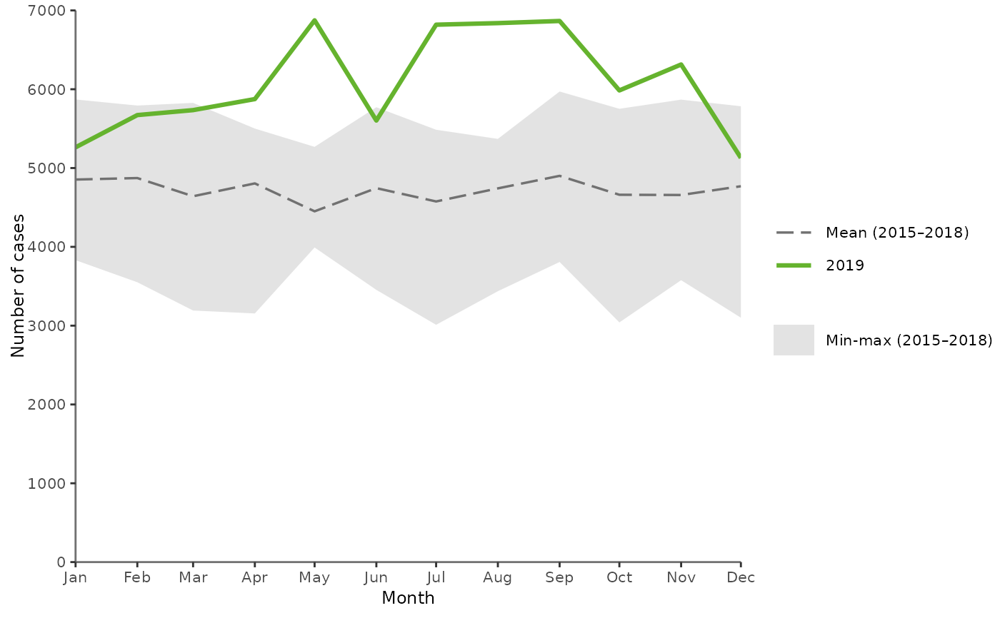
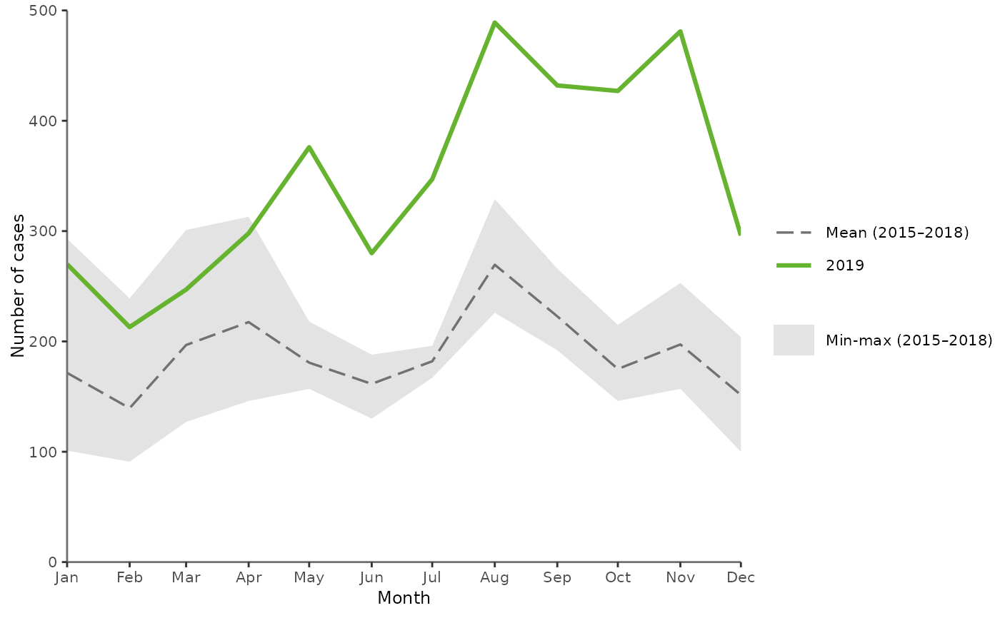

Seasonality line graph
plotSeasonality.RdThis function draws a line graph describing the seasonality of the selected disease
over the past 5 years.
The graph includes the distribution of cases, by month, over the past five years, with:
yvar: The number of cases by month in the reference year (green solid line)mean4years: The mean number of cases by month in the four previous years (grey dashed line)min4years: The minimum number of cases by month in the four previous years (grey area)max4years: The maximum number of cases by month in the four previous years (grey area)
Expects aggregated data and pre-calculated min, max and mean figures.
Usage
plotSeasonality(
.data,
xvar = "TimeCode",
yvar = "N",
min4years = "Min4Years",
max4years = "Max4Years",
mean4years = "Mean4Years",
year = 2016
)Arguments
- .data
dataframe containing the variables to plot
- xvar
character string, name of the time variable on the x-axis in quotes (default
"TimeCode")- yvar
character string, name of the variable to plot on the y-axis in quotes (default
"N"), number of cases by month in the reference year (green solid line)- min4years
character string, name of the variable to plot in quotes including the minimum number of cases by month over the past 4 years (default
"Min4Years")- max4years
character string, name of the variable to plot in quotes including the maximum number of cases by month over the past 4 years (default
"Max4Years")- mean4years
character string, name of the variable to plot in quotes including the mean of the number of cases by month over the past 4 years (default
"Mean4Years")- year
numeric, year to produce the graph for (default
2016).
Examples
# --- Plot using external dataset
# Create a dummy dataset
test <- data.frame(Time = as.Date(paste0("2019-",c(1:12), "-01")),
N = sample(c(5000:7000), 12),
mean = sample(c(4000:5000), 12),
low = sample(c(3000:4000), 12),
high = sample(c(5000:6000), 12))
# Plot the dummy data
plotSeasonality(test,
xvar = "Time",
yvar = "N",
min4years = "low",
max4years = "high",
mean4years = "mean",
year = 2019)

# --- Please see examples in the vignette
browseVignettes(package = "EpiReport")
#> No vignettes found by browseVignettes(package = "EpiReport")
# --- Plot using the default dataset
getSeason()
